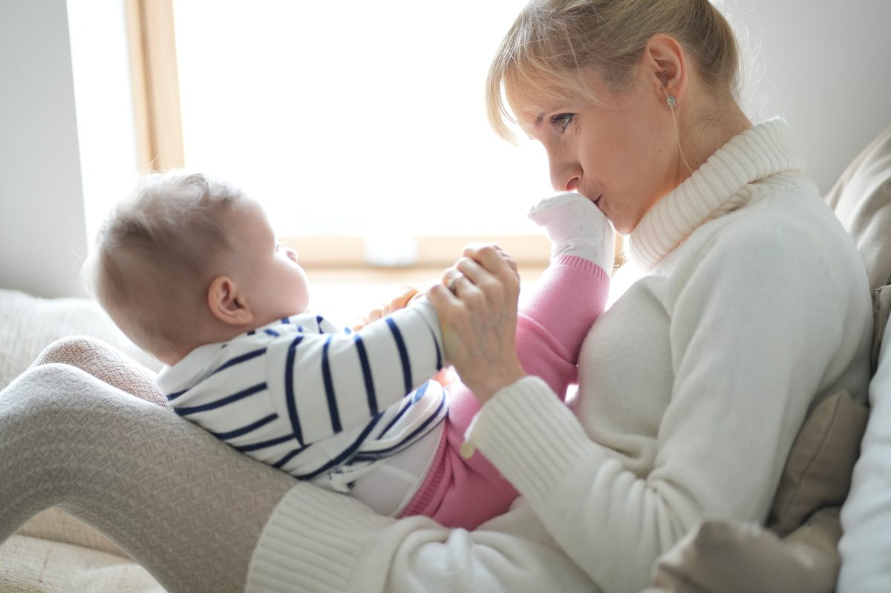
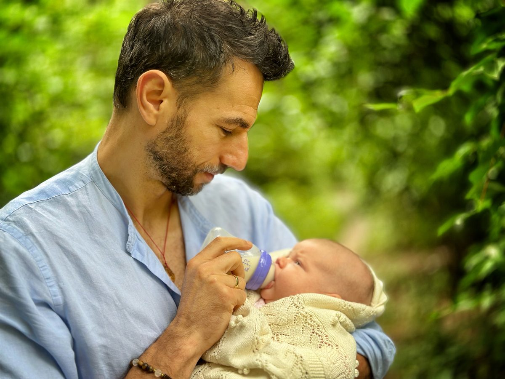

Zwykłe dni, z bliska.
Nazywam się Mariusz Świerguła. Fotografuję rodziny w domu i w plenerze, w Łodzi i w całej Polsce.
Odkąd zostałem tatą, najczęściej fotografuję moją córkę. To ona pokazała mi, ile znaczą zwykłe, codzienne kadry. Takich szukam w Twoim domu.


Do wymianySesja rodzinna u klientów zrobiona aparatem: 10 do 12 kadrów
Do wymianyDruga rodzina, plener